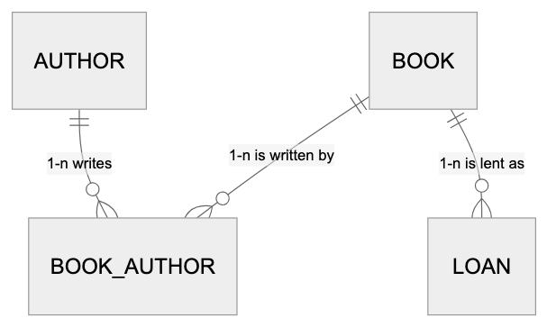

Lesson 1 · Relational Modelling
FSA · Session 1
After this lesson, you can:
What the domain talks about
book, author, loanerDiagram
AUTHOR ||--o{ BOOK_AUTHOR : "1-n writes"
BOOK ||--o{ BOOK_AUTHOR : "1-n is written by"
BOOK ||--o{ LOAN : "1-n is lent as"

A member borrows a book on a date and returns it by a due date.
Member: it has facts of its own. The dates are facts about a loan.
How a row is found again
Every table has one primary key, chosen from its candidates
Candidate
Primary
Foreign
Any column set that identifies a row uniquely, such as isbn.
The candidate you choose to identify rows. It never changes.
A column that holds another table's primary key.
CREATE TABLE book (
isbn CHAR(13) PRIMARY KEY,
title TEXT NOT NULL
);An ISBN can be reissued.
CREATE TABLE book (
id BIGINT PRIMARY KEY,
isbn CHAR(13) NOT NULL UNIQUE,
title TEXT NOT NULL
);The ISBN stays unique, but nothing points at it.
A member table identifies members by their email address.
No. Emails change. Keep it UNIQUE and add a surrogate id.
Each fact stored once
1NF
One value per cell: no lists packed into a column.
2NF
Every column depends on the whole key, not part of it.
3NF
No column depends on another non-key column.
CREATE TABLE book (
id BIGINT PRIMARY KEY,
authors TEXT
);CREATE TABLE book_author (
book_id BIGINT
REFERENCES book(id),
author_id BIGINT
REFERENCES author(id),
PRIMARY KEY (book_id,
author_id)
);loan(id, book_id, book_title, due_date)
3NF: book_title depends on book_id, not on the loan.